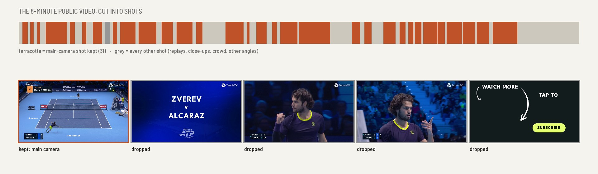
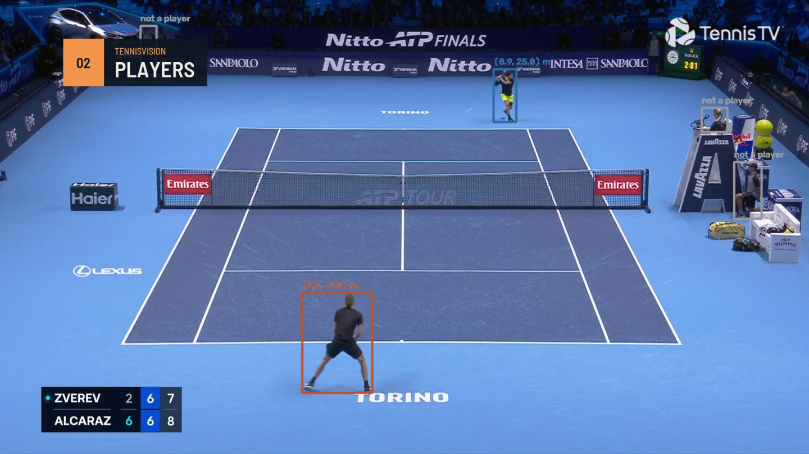
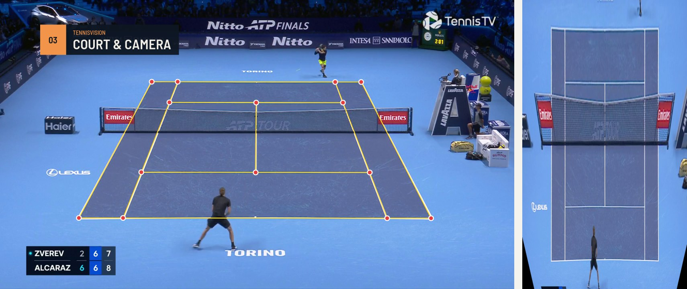
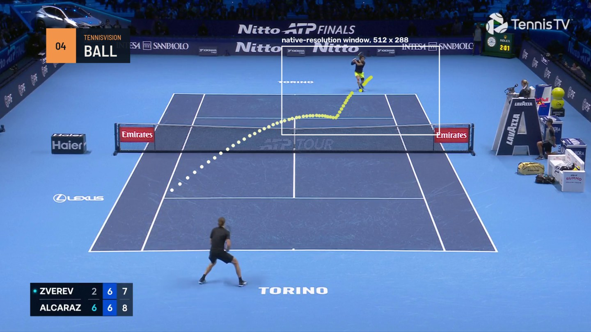
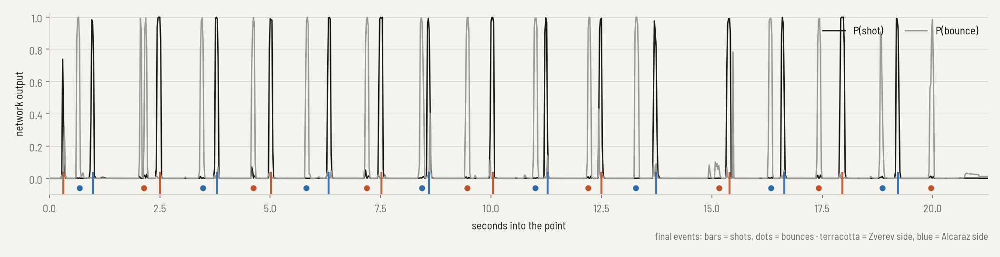
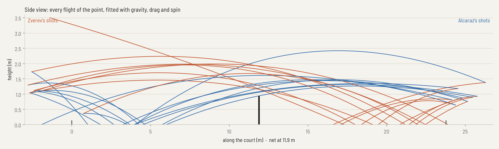
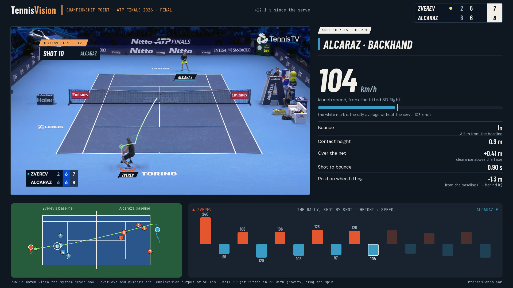

From a single broadcast feed to shot-by-shot tennis data: every shot, every bounce, the ball in 3D.
Where every ball bounced, how fast it was hit and from where: that data comes from multi-camera systems installed at a few courts. Broadcast video exists for every match.
TennisVision finds the players, the court and the ball, times every shot and bounce, and rebuilds the ball's flight in 3D, fifty times a second.
The point above is the last of the 2026 ATP Finals, from a public upload published after every model was trained. No ground truth behind it, no help.
This is what TennisVision measured on the championship point, drawn from the same data that is published on GitHub. Press play, or pick a bounce or a bar to see that shot.
There is a product demo too. The same data as a broadcast product: the pipeline step by step on one frame, the court explorer full size, and the board.
Open the product demo →
The broadcast is cut into shots. Only those where the court is seen from the main camera are kept, and the scoreboard is read with OCR.

02 / 07A transformer detector finds every person; a filter keeps the two players and drops the umpire, line judges and ball kids. Their feet go onto the court, in metres.

03 / 07A keypoint network, trained from scratch, finds the 14 line intersections in every frame: a homography for the ground and a 3D camera that pans and zooms.

04 / 07Two convolutional heatmap networks: one scans the whole frame, the other looks again at native resolution around the ball's predicted path.

05 / 07A video network that fuses image and sound, the crack of the racket and the thud of the bounce, gives the probability of a shot and of a bounce in every frame.

06 / 07A decoder that knows the rules turns probabilities into tennis. Then every flight is fitted in 3D with gravity, drag and spin, through the moving camera.

07 / 07Speed, contact height, clearance over the net, depth, in or out, and how far each player ran: shot by shot, as the point unfolds.
On 439 points reviewed by hand, 3,199 shots and bounces, from four matches on hard, clay and grass.
The same idea for amateur matches filmed with a single fixed camera and no scoreboard: the score, the stats and the highlights, built automatically. Rallies are already cut by detecting the serving pose (56 of 57 serves found), and given who wins each point the score comes out right: 38 of 38 points and the 6–0 set.